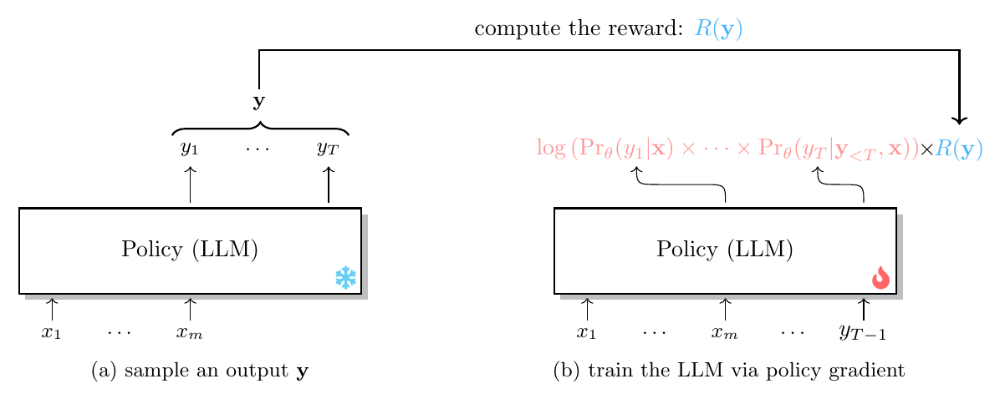
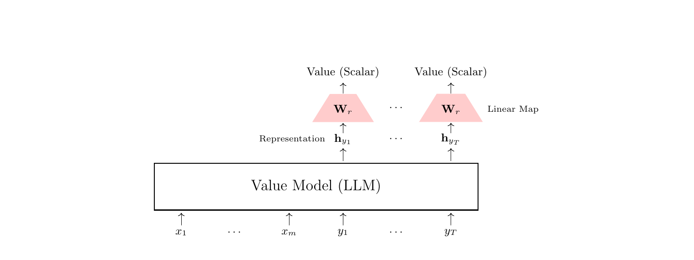
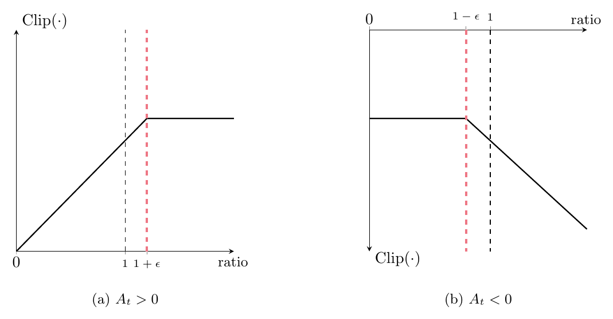
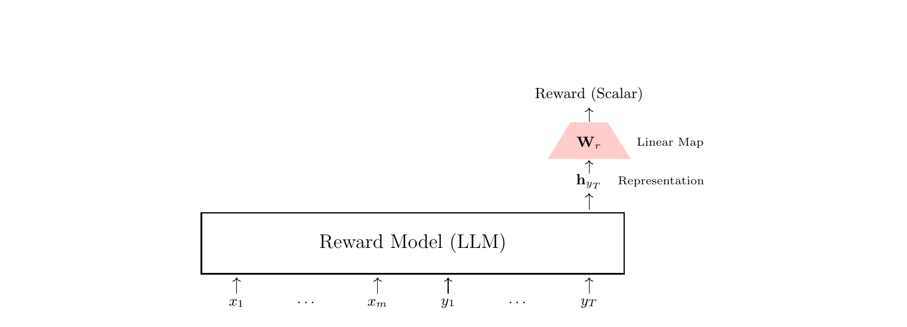

第 3 章 理解 LLM 训练中的强化学习
Understanding RL in LLM Training
3 理解 LLM 训练中的强化学习
我们继续用一个实际的例子：把 LLM 用作作业辅导助手。在这个场景中，我们希望提升一个 SFT LLM 处理教育类输入的能力。 假设我们有一个由 SFT LLM 驱动的作业辅导助手，学生输入“Give me three tips to improve my accuracy in solving math problems.” （给我三条建议，提高我做数学题的正确率。）SFT LLM 通常会生成一段很短的回答，比如：
1. Practice regularly.
2. Understand the concepts.
3. Double-check your work.
（中文示意：提高数学题正确率有三条建议：1. 定期练习；2. 理解概念；3. 做完仔细检查。）
虽然这个输出与输入相符，但它太短，在该场景下既不充分也不完整。实践中，生成结果的“短”源于 SFT LLM 的训练方式： SFT 阶段，LLM 从大量带标注样本中学习，而这些样本对常见输入的典型标注往往是简洁、事实性的回答。这样的样本会引导 LLM 优先追求简短与清晰，因此常产出像上面这样的短输出。当然，我们可以标注足够多的额外数据、进一步微调 LLM， 让它生成期望的输出。但这种方式在规模化上能力有限：例如在该场景中，可能的输入千变万化，学生的期望也多种多样， 想精确刻画“理想输出”需要巨大的标注工作量。因此，收集或标注微调数据并不像 SFT 看起来那么直接， 尤其是当我们想覆盖尽可能广的学生输入与输出时。更好的做法是用强化学习让模型学会分辨哪些输出更符合人类偏好， 比如生成更详细、更完整的内容——既贴合给定输入，又满足该场景下学生的期望。
在接下来的小节中，我们用这个具体的 LLM 训练示例来解释强化学习如何工作：让 LLM 在作业辅导场景下生成更长的回答。 我们将贯穿这个例子，介绍关键的强化学习算法及其改进。
3.1 策略梯度
本节的目标：用一个经典强化学习算法——策略梯度（policy gradient），让 LLM 对“给我三条建议”这个输入生成更长的回答。 为了定义优化目标，设 \(R(\cdot)\) 为描述算法要达成的目标的奖励函数。在这个场景里，奖励被设计为引导 LLM 表现出某种特定行为： 生成更长的输出。因此，我们基于一个与长度相关的指标来定义奖励函数。更具体地，奖励可以正比于输出长度， 即越长的输出可以获得越高的奖励：
其中 \(\mathrm{Length}(\cdot)\) 表示给定输出的长度。为简单起见，可以用输出中的词元数作为长度。 于是我们可以给 LLM 生成的第 \(t\) 个词元分配即时奖励 \(r_t\)，其值为 \(\frac{1}{10}\)。
接下来，我们在这个奖励函数上应用强化学习，鼓励 LLM 生成更长的输出。首先回顾强化学习的优化目标：学习一个策略， 最大化智能体在长期中的累计奖励（即回报）。在本例中，智能体就是 LLM 本身；策略可定义为“在前文上下文词元给定条件下， LLM 所预测词元上的概率分布”，即 \(\mathrm{Pr}_{\theta}(\cdot\mid\mathbf{x})\)2。
2 为与强化学习的记号保持一致，许多相关文献也把这一策略写作 \(\pi_{\theta}(\cdot\mid\mathbf{x})\)。 这里从 LLM 研究的视角出发，改用概率记号 \(\mathrm{Pr}_{\theta}(\cdot\mid\mathbf{x})\)，这对本领域读者更熟悉。

优化目标可以写成：
其中 \(\mathcal{S}_x\) 表示只含输入的数据集，\(\mathbf{y}\in\Omega\) 表示输出 \(\mathbf{y}\) 取自假设空间 \(\Omega\)， \(T\) 表示 \(\mathbf{y}\) 的长度。\(J(\theta)\) 也称为性能函数。训练目标就是最大化 \(J(\theta)\)：
注意假设空间 \(\Omega\) 通常极其庞大，因为 LLM 的词表往往很大3，直接枚举所有可能的输出并不可行。 因此实践中用蒙特卡洛方法估计这一期望：从 LLM 采样输出 \(\{\mathbf{y}_1,\mathbf{y}_2,\cdots,\mathbf{y}_d\}\)， 用这些样本近似假设空间，记作 \(\mathcal{D}\)：
3 假设空间庞大，是因为 LLM 通常拥有极大的词表和复杂的分词方案。可能的词元组合数即使对较短的输出也随长度指数增长， 输出空间因此极其庞大，穷举所有可能输出在计算上不可行。

在用梯度下降优化目标时，可以进一步细化这个过程。首先计算 \(J(\theta)\) 对 \(\theta\) 的梯度：
在 \(\mathcal{D}\) 上对 \(d\) 个输出取蒙特卡洛样本平均，可以简化式 (17)，只需考虑 \(\frac{\partial\log \mathrm{Pr}_{\theta}(\mathbf{y}\mid\mathbf{x})}{\partial\theta}\) 与 \(R(\mathbf{y})\) 两项：
现在，如图 3 所示，我们得到一套优化 LLM 输出的强化学习方法：1）从只含输入的数据集采样输入、从 LLM 采样输出； 2）用我们定义的奖励函数评估每个采样输出；3）按式 (18) 用梯度下降更新 LLM，最大化性能函数。
可以从“假设空间重排”的角度理解这个优化过程，如图 4 所示。目标是通过给假设空间中较长的输出分配更高奖励来提高其概率， 同时给较短的输出分配更低奖励来降低其概率。换言之，策略梯度通过强化满足期望长度条件的输出来鼓励模型生成更长的回答， 并惩罚不满足目标的较短输出。

3.2 时序分解
用式 (18) 优化虽然直观，却有一个潜在问题：采样输出之间可能大幅重叠，但重叠部分得到的奖励却不同。 例如图 5 所示：输出 \(\mathbf{y}_1\) 与 \(\mathbf{y}_2\) 的第三条建议都包含同样的词元 “Double-check your work…anyone can significantly enhance their math problem-solving abilities.”（做完仔细检查……任何人都能显著提高自己的解题能力）， 但由于整条输出不同，它们获得的奖励差别很大（如 \(R(\mathbf{y}_1)=50\) 对 \(R(\mathbf{y}_2)=10\)）。 理想情况下，相同的生成行为应当获得一致的回报、不应剧烈波动，因为它们的贡献就是全部奖励之和。
在讨论解决方案之前，我们先对式 (18) 中的 \(\frac{\partial\log \mathrm{Pr}_{\theta}(\mathbf{y}\mid\mathbf{x})}{\partial\theta}R(\mathbf{y})\) 一项做时序分解，得到：
在这个形式下可以看到：生成第 \(t\) 步的词元不会影响 \(\sum_{k=1}^{t-1}r_k\) 这一项，只影响 \(\sum_{k=t}^{T}r_k\)。 因此可以安全地移除前一部分 \(\sum_{k=1}^{t-1}r_k\)，避免它干扰当前步的优化。这样做可以获得更稳定的词元级梯度计算—— 式 (18) 的梯度计算相应变为：
事实上，这一简化正是马尔可夫性质的体现：未来在给定当下后与过去独立。因此在奖励各项中，我们只关注从第 \(t\) 步开始、 真正受第 \(t\) 步词元生成影响的那部分。
3.3 梯度方差缩减
回到 3.2 节讨论的情形：排除过去词元的奖励虽然能降低梯度方差，实践中方差依然显著。其一，即便按修改后的式 (21) 计算， 若输出的重叠部分出现在靠前位置，同样词元的奖励仍然可能差别巨大；其二，不同时间步的奖励分布也可能差异很大。 例如考虑一条 500 词元的输出：按式 (21)，第 10 步的奖励可能远高于第 450 步（如 49 对 5）。好坏词元奖励的这种悬殊差距， 可能让整条输出的总奖励非常低——即使其中包含不错的词元。
进一步降低梯度方差的一种简单方法是：设置基线（baseline）\(b\)，从 \(\sum_{k=t}^{T}r_k\) 中减去它， 得到 \(\sum_{k=t}^{T}r_k-b\)。这里的基线可以理解为一个参照点：把奖励围绕该基线居中，就能去掉奖励中的系统性偏差4。
4 事实上，引入基线 \(b\) 并不会改变总奖励 \(\sum_{t=1}^{T}r_t\) 的方差。但值得说明：虽然基线不改变奖励的整体方差， 它能帮助降低梯度估计的方差。这是因为从总奖励中减去基线，有效地缩小了奖励围绕均值的波动，使梯度估计更稳定。 一般而言，\(\sum_{k=t}^{T}r_k-b\) 这一操作把奖励居中到零附近（例如把 \(b\) 定义为 \(\sum_{k=t}^{T}r_k\) 的期望值）， 能降低乘积 \(\sum_{k=t}^{T}\log \mathrm{Pr}_{\theta}(y_t\mid\mathbf{x},\mathbf{y}_{\lt t})(\sum_{k=t}^{T}r_k-b)\) 的方差。
带基线的策略梯度模型可以写成：
基线 \(b\) 的定义方式有很多。例如可以取 \(\mathcal{D}\) 中采样输出的平均长度，即 \(b=(\sum_{\mathbf{y}\in\mathcal{D}}\mathrm{Length}(\mathbf{y}))/d\)。这种方法能降低梯度的相对方差， 却无法解决同一条输出内部各时间步梯度方差的波动问题。要解决这一挑战，需要为每个时间步设置不同的基线， 针对性地降低该步的方差。为实现这一理想基线，我们引入价值函数（value function）\(V(\cdot)\)。 在 LLM 训练中，价值函数计算“生成 \(y_t\) 时未来奖励之和（或回报，对简短情形即短回报）的期望值”， 以输入 \(\mathbf{x}\) 与此前生成的词元 \(\mathbf{y}_{\lt t}\) 为条件，即 \(V(\mathbf{x},\mathbf{y}_{\lt t},y_t)=\mathbb{E}[\sum_{k=t}^{T}r_k]\)。于是我们得到：
其中 \(\sum_{k=t}^{T}r_k\) 表示实际收到的回报，\(V(\mathbf{x},\mathbf{y}_{\lt t},y_t)\)（简记 \(V_t\)）表示第 \(t\) 步的期望回报。 \(A(\mathbf{x},\mathbf{y}_{\lt t},y_t)\)（简记 \(A_t\)）称为第 \(t\) 步的优势（advantage），它量化了“当前生成的 \(y_t\) 相对于期望回报的相对收益”。 用式 (22) 计算优势属于蒙特卡洛优势估计（Monte Carlo-based advantage estimation）一类方法。把优势函数 \(A_t\) 代入， \(J(\theta)\) 的梯度可写成如下形式：
基于这一训练目标，LLM 训练的损失函数可写成：

实现价值函数的方法有很多。简单的一种是在预训练 LLM（例如 SFT LLM）之上构建：此时价值函数也即价值模型（或评论器模型，critic model）。 具体做法是把 \(\mathbf{x}\) 与 \(\mathbf{y}\) 拼接成单个词元序列 \(\mathrm{seq}_{\mathbf{x},\mathbf{y}}=[\mathbf{x},\mathbf{y}]\)， 照常送入 SFT LLM 运行；在每个位置从最顶层 Transformer 层取得表示。我们取输出位置上的表示 \(\{\mathbf{h}_{y_1},\mathbf{h}_{y_2},\cdots,\mathbf{h}_{y_T}\}\)，分别经线性变换映射为标量。图 6 展示了这种价值模型架构。 于是在 \(t\) 时刻可计算 \(V_t\)：
其中 \(\mathbf{h}_{y_t}\) 是 \(d\) 维向量，\(\mathbf{W}_v\) 是 \(d\times 1\) 的线性映射矩阵。这类价值模型通常用时序差分 （temporal difference，TD）误差训练。该训练方法基于这样的原理：相邻时间步的价值之差应对应前一步收到的奖励， 即 \(V_t-V_{t+1}=r_t\)。设价值模型以 \(\omega\) 参数化，给定序列 \(\mathrm{seq}_{\mathbf{x},\mathbf{y}}\)，损失函数为：
或者引入折扣因子 \(\gamma\)，得到更一般的形式：
其中 \(\gamma\in[0,1]\) 是折扣因子，用来调节未来奖励的重要性。把 \(\gamma\) 设为小于 1，意味着早期奖励被认为比远期奖励更重要。 这一基本思想也应用于其他领域。例如在 LLM 中已有研究表明早期词元的生成至关重要，因为它会影响整条输出的风格与准确性 （Wang & Zhou, 2024）。
本小节详述了把价值模型整合进 LLM 训练的做法。实践中，式 (23) 所代表的训练方法就是优势行动者-评论器 （Advantage Actor-Critic，A2C）方法（Mnih et al., 2016）：策略模型（演员）与价值模型（评论器）并行学习、同步更新。 不过强化学习领域十分广阔，这里无法覆盖所有技术细节；感兴趣的读者可参阅强化学习教材 （Szepesvári, 2010; Sutton & Barto, 2018）了解更多。
3.4 重要性采样
本小节讨论提升策略梯度效率的方法，重点是采样过程。虽然 3.1 节已说明蒙特卡洛采样可以估计假设空间， 但在我们这种场景里——采样输出可能有数百乃至数千词元——为了单次更新就去采样，效率低得难以接受。 一个自然的想法是：这些采样输出能否多次复用、反复用于更新 LLM？借助重要性采样 （importance sampling），这是可行的，并且可以把 LLM 训练的损失函数改写为：

其中 \(\theta_{\mathrm{ref}}\) 表示此前所用 LLM 的参数，也称参考策略（reference policy）或旧策略（old policy）。 这里用 \(\mathrm{Pr}_{\theta'}(\cdot\mid\mathbf{x})\) 或 \(\mathrm{Pr}_{\theta_{\mathrm{ref}}}(\cdot\mid\mathbf{x})\) 指代 \(\mathcal{D}\)， 以区分输出来自哪个模型的采样。比值函数 \(\frac{\mathrm{Pr}_{\theta}(y_t\mid\mathbf{x},\mathbf{y}_{\lt t})}{\mathrm{Pr}_{\theta_{\mathrm{ref}}}(y_t\mid\mathbf{x},\mathbf{y}_{\lt t})}\) 比较词元 \(y_t\) 在当前策略与参考策略下的概率：它用于重加权观察到的奖励，反映该词元在当前策略下比在参考策略下“更可能”还是“更不可能”。 比值大于 1 表示 \(y_t\) 更受当前策略偏爱；小于 1 表示当前策略对它更不偏爱。然而，当当前的 \(\theta\) 与 \(\theta_{\mathrm{ref}}\) 偏离过大时，假设空间估计的准确度会下降。
因此，我们确实需要定期重新同步（resync）参考策略。如图 7 所示，一种简单的做法是：把某个训练步开始时所用的 LLM 指定为参考策略。 注意，第 1 步无需复制模型，就能节省计算时间与内存：直接从当前策略采样，保留输出概率 \(\{\mathrm{Pr}_{\theta}(y_1\mid\mathbf{x}),\cdots,\mathrm{Pr}_{\theta}(y_T\mid\mathbf{x},\mathbf{y}_{\lt T})\}\)， 之后用这些存下的概率充当 \(\{\mathrm{Pr}_{\theta_{\mathrm{ref}}}(y_1\mid\mathbf{x}),\cdots,\mathrm{Pr}_{\theta_{\mathrm{ref}}}(y_T\mid\mathbf{x},\mathbf{y}_{\lt T})\}\)， 再按式 (28) 更新策略。
不过，用重要性采样更新 LLM 存在一个固有隐患：如图 8 所示，若某次优化步产生了较差的更新（或一次很差的短步，terrible step）， 下一轮迭代第 1 步所使用的参考策略就会继承这些糟糕的特性；于是第 2 步采样出的样本也很可能受到不利影响，导致更糟的一步。 与监督微调不同5，这个循环不会纠正最初的坏步骤，反而可能把它放大，使策略性能一路下滑。
5 在监督学习中，坏样本在训练步内造成的糟糕更新，通常能在后续步骤被好样本纠正。

解决这一问题要考虑优化中的信赖域（trust regions）（Schulman et al., 2015）：它指当前参数估计周围、模型表现良好的参数区域。 引入信赖域的一种做法是限制策略更新的幅度。这可以通过施加约束、防止优化后的策略偏离优化前的策略太远来实现。 训练 LLM 时，这一约束通常通过“在目标函数上叠加基于当前策略与参考策略之间散度的惩罚项”来实现。 这种惩罚的一种简单形式，由采样 \(\mathbf{y}\) 在两种策略下对数概率之差给出：
在第 \(t\) 个时间步，惩罚项可写成：
把这个惩罚项并入优化目标，就能让当前策略保持在参考策略附近，限制糟糕一步中出现过大的更新。 把它并入式 (28)，得到：
其中 \(\beta\) 是惩罚权重。这种训练方法也称为信赖域策略优化（trust region policy optimization，TRPO） （Schulman et al., 2015）。
3.5 近端策略优化
对 TRPO 的进一步改进，要处理 3.3 节描述的梯度方差问题。式 (31) 中比值函数的取值范围是 \([0,+\infty)\)， 这会让学习过程中出现很高的梯度方差。为缓解该问题，常用裁剪（clipping）来限制重要性权重的幅度， 防止过大的更新、促进学习过程稳定。裁剪版本可以写成：

其中裁剪函数 \(\mathrm{Clip}(\cdot)\) 可定义为：
其中 \(\mathrm{bound}(\cdot)\) 把比值函数约束在区间 \([1-\epsilon,1+\epsilon]\) 内。式 (33) 施加的裁剪如图 9 所示。 这种训练方法也称为近端策略优化（proximal policy optimization，PPO）（Schulman et al., 2017）—— 目前用强化学习训练 LLM 使用最广的方法。最初，PPO 还提出用自适应的 \(\beta\) 来动态控制惩罚项； 但这种自适应做法在 LLM 训练中并未被广泛采用，因为它依赖对惩罚的期望（即 \(\mathbb{E}(\mathrm{Penalty})\)）， 会带来额外计算开销。想了解这一自适应方法的读者可参阅原始文献。
3.6 训练奖励模型
3.1 节基于输出长度的初始奖励函数，确实为学习过程提供了有效信号；但人类偏好远比“更长的输出更好”复杂。 例如在作业辅导场景中，模型不仅要生成更长的回答，还要避免冗余、保证准确、维持流畅。这种复杂性凸显出对精细奖励建模技术的需求： 要超越简单的函数式方法，更有效地捕捉人类偏好。
鉴于这些复杂性，我们通常训练一个奖励模型（reward model）——把“输入+输出”词元序列映射为标量值、用来刻画人类偏好的神经网络。 给定输入 \(\mathbf{x}\) 与输出 \(\mathbf{y}\)，奖励表示为 \(\mathrm{Reward}(\mathbf{x},\mathbf{y})\)，其中 \(\mathrm{Reward}(\cdot)\) 指奖励模型。 实现奖励模型的方法有很多。简单的一种是在预训练 LLM 之上构建，类似于 3.3 节介绍的价值模型。具体地，用序列 \(\mathrm{seq}_{\mathbf{x},\mathbf{y}}=[\mathbf{x},\mathbf{y}]\) 作为输入，照常运行 LLM、从最顶层 Transformer 层取表示； 然后取输出最后一个位置的表示，经线性变换映射为标量6：
其中 \(\mathbf{W}_r\) 是 \(d\times 1\) 的线性映射矩阵；\(\phi\) 表示奖励模型的参数，既包括 LLM 的参数，也包括 \(\mathbf{W}_r\)。 奖励模型的这一架构如图 10 所示。
6 实践中用 LLM 训练奖励模型时，主要是把它当作编码器，把序列 \(\mathrm{seq}_{\mathbf{x},\mathbf{y}}\) 编码为表示。 这里选最后一个位置的表示，是因为它凝结了整个序列的语义信息。

训练奖励模型的第一步，是对一批生成结果收集人类反馈。给定输入 \(\mathbf{x}\)，我们用 LLM 产生多个候选输出 \(\{\mathbf{y}_1,...,\mathbf{y}_d\}\)。接下来，可以通过以下方式获得人类反馈：
打分（Rating）。 人类专家为每个输出提供分数或评分。分数通常是连续值或离散数值，如量表评分（1-5 星或 1-10 分）。有时评分是二值的， 表示“是/否”或“正/负”偏好。
列表排序（Listwise Ranking）。 请人类专家对给定的候选输出集合进行排序。
两两比较（Pairwise Comparison）。 给定两个不同输出，人类专家选出更好的一个。这种标注方式尤其流行，因为相比前两种更容易标注。
这里我们考虑用两两比较反馈来训练奖励模型。在这种设定下，每次从候选输出池 \(\{\mathbf{y}_1,...,\mathbf{y}_d\}\) 随机抽取两个输出 \((\mathbf{y}_a,\mathbf{y}_b)\)，人类专家根据信息量、准确性、流畅性等具体标准判断更偏好哪一个。 人类反馈可编码为二值标签：\(\mathbf{y}_a\succ\mathbf{y}_b\) 表示偏好 \(\mathbf{y}_a\)，\(\mathbf{y}_b\succ\mathbf{y}_a\) 表示偏好 \(\mathbf{y}_b\)。
描述两两比较的一种简单且广泛使用的模型是 Bradley-Terry 模型（Bradley & Terry, 1952）。这是一种概率模型， 估计一个项目比另一个项目更受偏好的概率。按本文记号改写后，“\(\mathbf{y}_a\) 比 \(\mathbf{y}_b\) 更受偏好”的概率可写成：
训练奖励模型时我们希望最大化这一偏好概率。基于 Bradley-Terry 模型的损失函数为：
其中 \((\mathbf{x},\mathbf{y}_a,\mathbf{y}_b)\) 采自人类标注数据集 \(\mathcal{D}_r\)——由“输出的偏好对及其对应输入”构成。 训练奖励模型的目标是找到最小化该损失的最优参数 \(\hat{\phi}\)：
由于奖励模型本身就是 LLM，可直接复用 Transformer 的训练流程来优化它。与标准 LLM 训练的唯一区别是： 把交叉熵损失换成两两比较损失，如图 11 所示。奖励模型训练完成后，就可以用训练好的奖励模型 \(R_{\hat{\phi}}(\cdot)\) 来监督目标 LLM 的对齐。
值得注意：虽然奖励模型按两两排序训练，对齐过程中却是对每个输入-输出对独立打分。两两排序目标保证了奖励模型对输出之间的细微差异敏感， 而我们依赖奖励模型输出的连续分数来指导 LLM 优化。这种做法的好处是，可以选用或组合多种排序损失函数， 得到的奖励模型仍能像 4.1.3 节那样照常使用。但这种方法有一个挑战：奖励模型只能提供稀疏奖励（sparse reward）， 即给出的是延迟奖励，而非各中间步骤的即时奖励。因此这种情况下，奖励可写成：

针对这一挑战，常见的办法是在学习过程中引入塑形奖励（shaping reward）（Wu et al., 2023）， 或标注过程偏好数据来训练过程奖励模型（process reward model）（Lightman et al., 2024a）。 更多细节参见 5.1.2 节。
3.7 完整工作流
到此为止，我们用大量示例讨论了如何用强化学习训练 LLM、使其与人类偏好对齐，也说明了不同强化学习算法各自要解决的挑战。 本节把前述内容汇总起来，给出用强化学习——具体说是 PPO——训练 LLM 的完整工作流。实现 PPO 需要先构建四个模型， 它们全部基于同一个 LLM：
奖励模型（Reward Model）（记作 \(R_{\phi}(\cdot)\)，\(\phi\) 为参数）： 从人类偏好数据中学习，对每一对输入与输出词元序列预测奖励。通常用 SFT LLM 或预训练 LLM 初始化。
价值模型或价值函数（Value Model / Value Function）（记作 \(V_{\omega}(\cdot)\)，\(\omega\) 为参数）： 接收奖励模型的打分，并被训练去预测期望的奖励之和。一般用奖励模型或 SFT LLM 初始化。
参考模型或旧策略模型（Reference Model / Old Policy Model）（记作 \(\mathrm{Pr}_{\theta_{\mathrm{ref}}}(\cdot)\)， \(\theta_{\mathrm{ref}}\) 为参数）：参考模型是策略训练的起点基线 LLM。与 3.4 节的讨论一致，计算 RLHF 中的惩罚项时， 我们通常用模型的上一版本、或用未经人类反馈训练的模型充当参考策略模型，以获得更稳定的学习过程。
策略模型（Policy Model）（记作 \(\mathrm{Pr}_{\theta}(\cdot)\)，\(\theta\) 为参数）： 给定上下文，该策略决定 LLM 下一个词元的选取。它在奖励模型与价值模型的共同监督下训练。

实践中，这些模型需要按一定顺序训练。第一，用其他模型初始化：奖励模型与价值模型可用预训练 LLM 或 SFT LLM 初始化， 参考模型与策略模型可用 SFT LLM 初始化；注意此时参考模型已可直接使用、不再更新。第二，收集人类偏好数据，用这些数据训练奖励模型。 第三，价值模型与策略借助奖励模型同时训练7：对输出序列的每个位置，通过最小化价值预测的均方误差（MSE）更新价值模型， 通过最小化 PPO 损失更新策略。
7 基于 PPO 的优化可采用冷启动：初始阶段只更新价值模型，避免基于早期不准确的价值预测去调整策略模型 （Wang et al., 2024a）。
上述强化学习流程前景可观——确实能把 SFT LLM 与人类偏好有效对齐——但实现中也有不小的挑战，例如：
• 训练奖励模型需要带标注的偏好数据。因此必须为给定输入生成多个输出，并按人类偏好标注。例如在我们的场景中， 需要标注大量数据才能准确反映学生偏好，从而让作业辅导助手产出学生期望的内容。而且在此过程中，必须保证数据质量高、 能准确反映人类偏好——数据不准确会误导学习：模型可能习得不希望的偏好，或达不到用户期望，也就是所谓过度优化或奖励投机 （overoptimization or reward hacking）（Gao et al., 2023）。因此，偏好数据必须仔细收集、充分覆盖，奖励模型才能准确捕捉人类偏好。
• 强化学习训练 LLM 的代价高昂。原因有二：一是强化学习过程本身需要在自回归模式下采样（Xiao & Zhu, 2023）—— 由于策略模型参数量通常很大，这非常耗算力；二是基于 PPO 的优化要同时加载四个 LLM，显存需求远高于 SFT。 为应对这些挑战，学界对高效强化学习策略的关注度显著提升，例如动态采样（Wang et al., 2024b）与基于规则的奖励 （Shao et al., 2024）：它们不需要高昂的计算与时间开销，仍能保持最先进的性能。
• 强化学习常常不稳定。虽然强化学习为每个组件的设计提供了坚实的理论基础，系统任何部分的改动都可能高度敏感： 对奖励模型、策略模型的小调整，甚至超参数的小变化，都可能造成性能的大幅波动，难以得到稳定一致的结果。 这种脆弱性凸显出精心调优与稳定的重要性；尤其当应用于 LLM 这样复杂的系统时，常需要奖励塑形、自适应学习率、 更精细的优化策略等技术来缓解不稳定性、提升学习过程的鲁棒性。
［第 3 章完，对应原书页 13–27。］